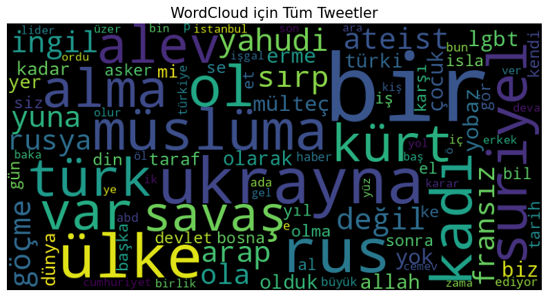

Hate Speech Detection & Sexism Analysis
Nefret Söylemi ve Cinsiyetçilik Tespiti
High-performance NLP pipeline for detecting hate speech in social media
Sosyal medyada nefret söylemini tespit eden yüksek performanslı NLP sistemi

Project Type
Proje Türü
NLP / Text Classification
NLP / Metin Sınıflandırma
Core Model
Temel Model
TF-IDF + Logistic Regression
Dataset
Veri Seti
Social Media Data
Sosyal Medya Verileri
Status
Durum
Published
Yayınlandı
This project detects hate speech and sexism in social media using NLP techniques.
A full pipeline including text preprocessing, TF-IDF feature extraction and classification models was implemented.
The system achieved high accuracy and contributes to ethical AI by reducing harmful content.
Bu proje, sosyal medyada nefret söylemi ve cinsiyetçi içerikleri tespit etmek amacıyla geliştirilmiş bir doğal dil işleme sistemidir.
Metin ön işleme, TF-IDF özellik çıkarımı ve sınıflandırma modellerini içeren tam bir makine öğrenmesi pipeline’ı kurulmuştur.
Model yüksek doğruluk elde etmiş olup zararlı içeriklerin azaltılmasına katkı sağlayarak etik yapay zekâ alanına destek sunmaktadır.
from sklearn.feature_extraction.text import TfidfVectorizer
from sklearn.linear_model import LogisticRegression
Tech Stack
Teknolojiler
Python
Pandas
Scikit-learn
NLTK
Methods
Yöntemler
- TF-IDF
- Logistic Regression
- Naive Bayes
Key Features
Özellikler
-
Hate Speech Detection
Nefret Söylemi Tespiti
-
Sexism Classification
Cinsiyetçilik Sınıflandırması
-
NLP Pipeline
NLP İş Akışı
Achievements
Başarılar
-
Conference Presentation
Konferans Sunumu
-
Published Paper
Yayınlanan Akademik Makale
-
High Accuracy
Yüksek Doğruluk
-
Ethical AI Contribution
Etik Yapay Zekâ Katkısı